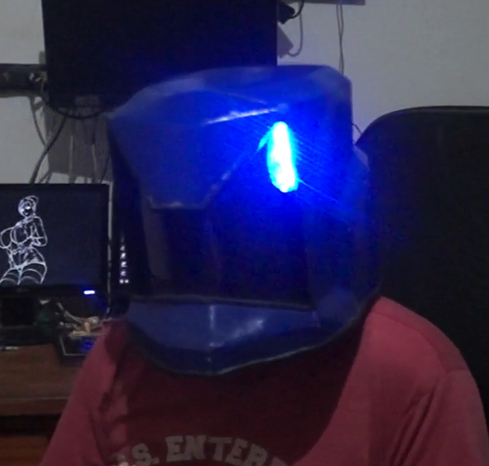

|
Remilson é um pedagogo formado e cofundador dos Otames, amigo de infância de Narutex estudaram na mesma escola. Remilson é um teoríco da compreensão da realidade no caos tecnológico do mundo atual aonde somos meros simios com computadores em nossos bolsos. Remilson atua como a consciência ética do nosso grupo, nos levando ao próximo estágio de evolução da Otakidade |

Narutex é fundador dos Otames, desenvolvedor de projetos pessoais, criador de conteúdo e jogador de Jogos para PC desde de 1996 quando ganhou seu humilde DX2-66, compilou uma engine 4 vezes no Linux Mint e 2 vezes no Ubunto, programou 3 mesas de pinball aos 14 anos (apenas 1 funcionou) sem nenhum conhecimento sobre Visual Pinball. Interessado por Robótica e Jogador de Unreal Tournament 2004 com sua própria Skin. |
Build é o cara das construções desde engenharia no Tekkit Classica a projeto de Bestas que lançam dardos improvisados, habilidoso na utilização de ferramentas elétricas e na manufatura. Build é Co-Fundador dos Otames junto con Narutex 216 Bits e Remilson em 1 de Novembro de 2016. |
Agente Fogueira Agente de campo para entrevistas e cobertura de eventos. Atuante no campo filosófico do pensamento Neo-Otaku. Agente fogueira estava presente naquele glorioso 1 de Novembro qual a idéia nasceu. Presente naquele momento, ele nos proporcionou a idéia de criar uma comunidade com o intuito de criar uma cultura Otaku diferenciada da internet cruel e saturada que encontramos todos os dias. |